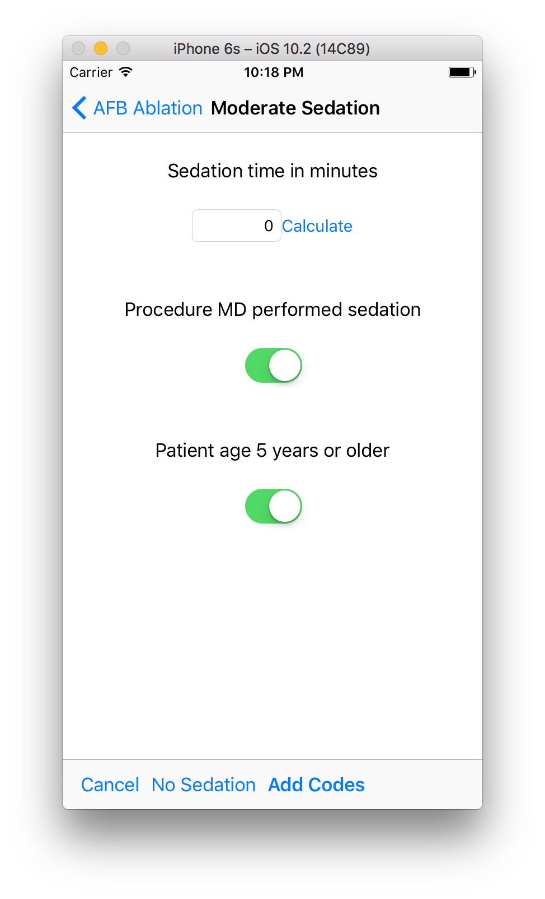
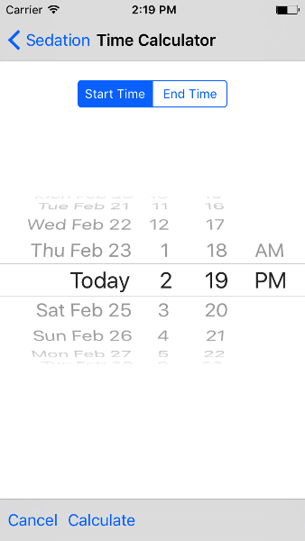
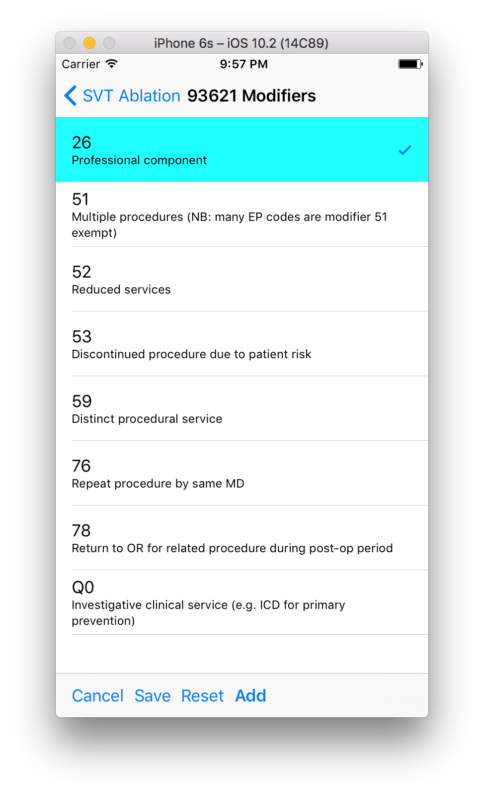

Table of Contents
- EP Coding Help
- Who should use EP Coding?
- How does EP Coding help?
- How to use EP Coding
- Limitations
- General hints
- TODO Sedation
- TODO Modifiers
- AFB ablation
- SVT ablation
- VT ablation
- AV node ablation
- EP testing
- New PPM or ICD
- Replace PPM or ICD
- SubQ ICD/Leadless PPM
- Upgrade/revise/extract
- Other procedures
- All EP codes
- Abbreviations
- Acknowledgements
EP Coding Help
Who should use EP Coding?
Physicians who perform cardiac electrophysiology (EP) procedures and are required to submit CPT® codes for these procedures. EP Coding is intended to help EP physicians enter the correct codes in an EHR (Electronic Health Record). It is not intended for professional coders nor is it a substitute for the AMA official CPT® documentation.
How does EP Coding help?
- Lists relevant CPT® codes for EP procedures, with succinct descriptions.
- Makes clear which codes cannot be combined for specific procedures.
- Analyzes selected codes for errors and warnings.
- Provides help on how to code procedures.
How to use EP Coding
- Select a procedure from the list by tapping on it.
- Codes are organized as primary codes, at least one of which needs to be selected, and additional or optional codes which are commonly used with the primary procedure codes.
- Codes are organized logically, not necessarily in numeric order, with description given first, followed by code number.
- Select codes by tapping them.
- Codes that must be selected for a particular procedure are green and already selected. Codes that cannot be selected are crosshatched in gray.. Codes you select are yellow.
- Long press on a code to bring up a list of common code modifiers that can be added or removed from each code. Further information on using modifiers is presented below.
- Tap Sedation at the bottom of the screen to add sedation codes. Sedation coding is unbundled from procedure codes as of 2017 and must be calculated based on sedation time and other factors. EP Coding includes a handy sedation calculator described further below.
- Tap Summarize to show a summary of the codes selected along with any comments, warnings or errors (highlighted in green, orange or red respectively.
- Tap Clear to clear the selected codes.
- Tap Save to save your selection of additional codes as a default. If you nearly always select the same additional codes (e.g. always do 3D mapping with SVT ablation), save the codes and they will pre-selected when you use the app again. Note that primary code selections are not saved.
- Tap the menu icon on the upper right of the screen for more options.
- Tap Search to search for codes by name or number. Note that due to the abbreviations used, a search that you expect to have results may come up empty. For example to search for pacer/pacemaker codes, search for "PPM."
- Tap Device Wizard to steer you through complex device upgrades and revisions.
- The all EP codes module lists every EP procedure code in numerical order, with code number given first. It is the a la carte menu of EP Coding.
Limitations
- EP procedure codes only.
- No surgical EP codes (e.g. LV lead via thoracotomy).
- Some rare or obsolete codes are not included.
- Code descriptions are paraphrased.
- Code components are not given or are incomplete.
- No office based or in-patient billing codes.
- No device programming codes.
- Only limited, common code modifiers are presented.
General hints
- Use the specific procedure modules rather than the all EP codes module for coding procedures.
- You may find it easier to use the Device Wizard to do device upgrade coding rather than use the Upgrade/Revise/Extract module.
- Use the all EP codes module if you need to look up a specific code, as they are listed in numeric order in this module.
- There are some rarely used codes in the all EP codes module that aren't present in the other modules.
- Don't try to add codes that are disabled in a procedure module.
- If you nearly always add codes to a procedure (e.g. 3D mapping with AFB ablation), then save it as a default using the Save icon.
- Warnings (orange) point out codes that you may be missing or code combinations that possibly shouldn't be used together.
- Errors (red) indicate code combinations that almost certainly are not allowed.
- Check with your coders or the AMA documentation if you are not sure how to code a procedure.
TODO Sedation

Figure 1: Sedation coding calculator

Figure 2: Sedation time calculator
TODO Modifiers

Figure 3: Modifier screen
AFB ablation
- Includes comprehensive EP testing, LA pacing and recording and transseptal puncture.
- Add 93657 if additional AFB ablation done beyond pulmonary vein isolation.
- Add 93655 if separate supraventricular arrhythmia mechanism ablated (e.g. focal atrial tachycardia).
SVT ablation
- Includes comprehensive EP testing.
- SVT ablation code is used for any kind of SVT ablation including WPW, focal atrial tachycardia, atrial flutter, and AV nodal reentry.
VT ablation
- Includes comprehensive EP testing, LV pacing and recording, and mapping codes.
- You can't add mapping codes 93609 or 93613 to VT ablation!
AV node ablation
- It is not clear if EP testing codes can be combined with AV node ablation.
- It is not clear if mapping codes can be combined with AV node ablation.
- These points may need to be clarified with your coders.
EP testing
- Use 93620 (EP testing with attempted arrhythmia induction).
- Don't code with ablation procedures (? exception AV node ablation).
- You can add mapping codes, but don't add ablation codes to EP testing.
New PPM or ICD
- Use 33206 to 33208 for new PPM depending on number of leads.
- Use 33249 for new single or dual ICD.
- Add code 33225 to dual chamber device code for PPM or ICD with CRT.
- Add 93641 if you do DFT testing during the ICD implant.
- Placing a sub-cutaneous array is probably best coded with 33999 (unlisted surgical procedure code).
Replace PPM or ICD
- Use 33227 to 33229 for PPM replacement and 33262 to 33264 for ICD replacement depending on number of leads.
- Do not add generator removal codes to these codes!
- Add 93641 if you do DFT testing during ICD generator replacement.
SubQ ICD/Leadless PPM
- SubQ ICD has new codes in 2015.
- Leadless PPM codes are new and are emerging technology codes that are temporary and will probably be changed in the next revision of the codes.
Upgrade/revise/extract
- This is the most complicated coding area. We will break this down into some specific situations. You can also use the Device Wizard to lead you through this. This is the simplest way to do this!
- Note codes are arranged in logical groups, not necessarily in numeric order.
Lead addition only, no change in generator
- Use specific lead placement code, e.g. 33216, place A lead.
- Use 33224 to place an LV lead if the CRT generator is already there.
Lead repositioning
- Reposition previously implanted single A or V lead: 33215
- Reposition previously implanted LV lead: 33226
Removal of generator alone
- PPM generator removal: 33233
- ICD generator removal: 33241
- Don't use these codes in conjunction with generator-only replacement codes, but do use them with new/replacement system codes for upgrades (see Upgrade of system).
Removal/extraction of leads
- PPM single lead extraction: 33234
- PPM dual lead extraction: 33235
- ICD 1 or 2 leads extracted: 33244
- LV lead extraction has no specific code, probably should use 33234 or 33999 (unlisted procedure).
Removal of entire system without replacement
- Use combination of generator removal and lead removal codes as appropriate.
New/replacement device
- PPM: 33206 to 33208
- ICD: 33249
- Plus LV lead: 33225
Upgrade of system
- Single chamber to dual chamber PPM (includes new lead, removal of old generator and placement of new generator) : 33214
- Other situations: code removal of generator and removal of leads if leads are removed, then code for insertion of new system.
- Example: upgrade of single chamber PPM to ICD with CRT.
- Code PPM generator removal: 33233
- Code single or dual ICD system implant: 33249
- Code implant LV lead with new system: 33225
Place generator, existing leads
- Single chamber PPM generator: 33212
- Dual chamber PPM generator: 33213
- Single chamber ICD generator: 33240
- Dual chamber ICD generator: 33230
- CRT ICD generator: 33231
Pocket revision
- PPM pocket revision: 33222
- ICD pocket revision: 33223
Lead repair
- One lead repaired: 33218
- Two leads repaired: 33220
Other procedures
- These are miscellaneous EP procedures.
- Fluoroscopy to check for lead integrity: 76000
All EP codes
- Lists all codes in the app in numeric order.
- Avoid using this module unless other ones don't cover coding because procedure is unusual or rarely done.
- Code analysis may not check every combination of codes selected in this module.
- This module can be useful to look up specific code numbers.
- Sedation codes are listed, but the sedation calculator is not available in this module.
Abbreviations
- A = atrial
- AFB = atrial fibrillation
- AFL = atrial flutter
- CRT = cardiac resynchronization therapy
- ICD = implantable cardioverter defibrillator
- PPM = permanent pacemaker
- LV = left ventricular
- SubQ = subcutaneous
- SVT = supraventricular tachycardia
- V = ventricular
- VT = ventricular tachycardia
Acknowledgements
- CPT copyright 2012 American Medical Association. All rights reserved. CPT is a registered trademark of the American Medical Association.
- A limited number of CPT® codes are used in this app, under the fair use doctrine of the US Copyright Act. For a discussion of the rationale see here.
- The source code for EP Coding is available on GitHub.
- EP Coding is open source software and is licensed under the Apache License Version 2.0. No guarantees are made as to the accuracy of the app, so use at your own risk.
- For questions, error reporting or suggestions contact EP Studios.
- Website: https://www.epstudiossoftware.com